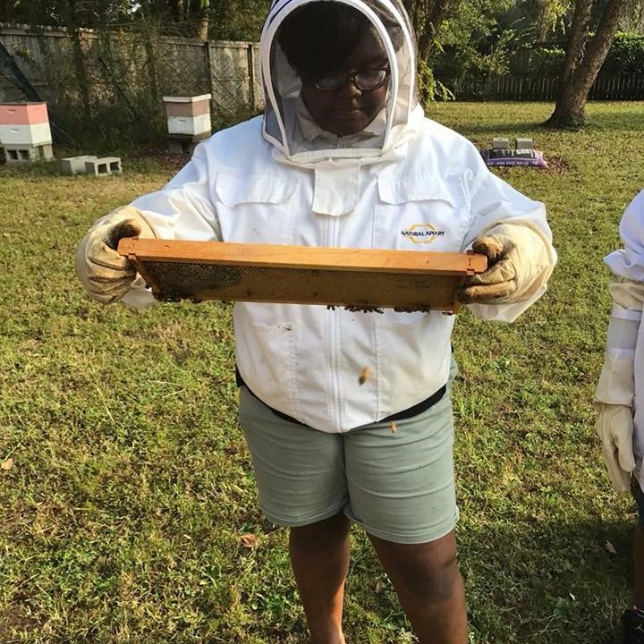
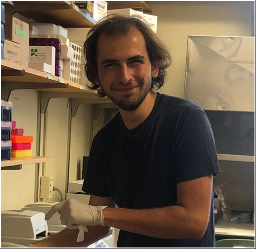
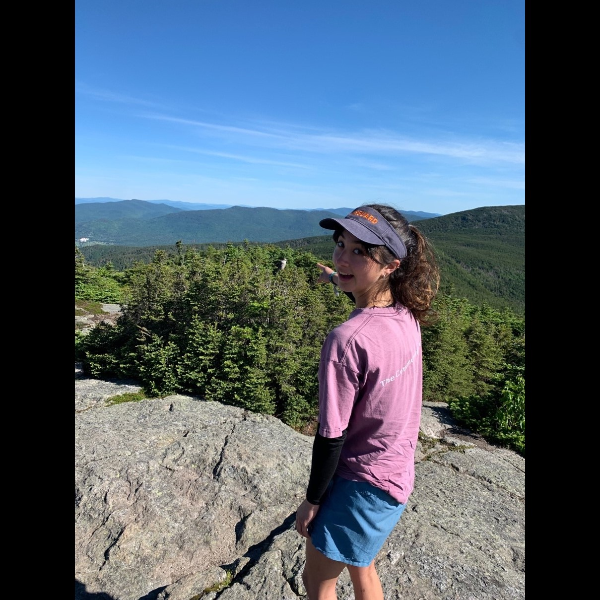
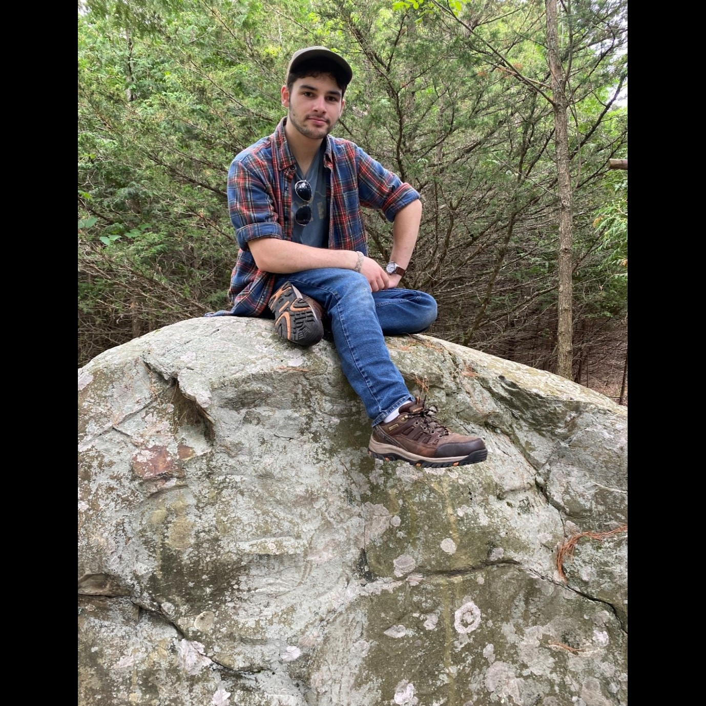
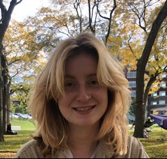
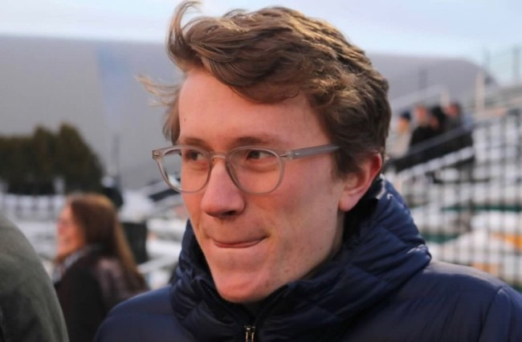

Helms/Helms Cahan Research Laboratory
Principal Investigators
Sara Helms Cahan, Ph.D
 I am an evolutionary ecologist interested in how physical and social environments shape the evolution of organismal traits. Much of my research program centers on social evolution in the eusocial Hymenoptera, particularly ants. My longest-running study system is the desert seed-harvester ant Veromessor pergandei, an excellent model for studying forces shaping social behavior because it is the only know species whose queens engage in three distinctive alternate social strategies during colony founding: single queens can start a new colony alone, or join up with unrelated co-foundresses in a temporary association that ends in lethal fighting, or form long-lasting polygynous relationships throughout the colony lifecycle. Extended cooperation is associated with harsher desert environments, suggesting that sociality permits persistence in the face of resource scarcity and unpredictability. In current work, we are reconstructing the evolutionary history of behaviorally divergent populations and investigating the genetic and functional bases of aggressive and cooperative behaviors.
A fascinating consequence of social evolution is that the social environment itself is both a response to and an agent of selection, with unique consequences for colony, population and species-level processes. We are exploring this interplay in ant species that display a remarkable mode of determination of the queen versus worker caste: social hybridogenesis. In hybridogenetic taxa, two distinct genetic lineages co-occur in the same habitats and interbreed with one another, but while F1 hybrids turn into workers and comprise the entirety of the colony workforce, reproductive queen daughters are produced from pure-lineage progeny. In our current projects, we are investigating the evolutionary origins of hybridogenetic systems, the selective forces that promote and maintain them, and the genetic basis of divergence in caste fate between hybrids and non-hybrids.
Finally, my most recent research projects concern how ectothermic insects cope with both cold and hot temperature extremes, with the goal of understanding the extent to which physiological acclimation and evolutionary adaptation underlie species thermal performance curves. Our model systems include the forest ant genus Aphaenogaster, an important dispersal agent for annual plants in eastern deciduous forests, as well as the genetic model organism, Drosophila melanogaster, and its wild congeners. This work is funded by NSF/EPSCoR, and is a collaboration with Drs. Brent Lockwood and Seth Frietze from UVM, Dr. Nick Teets from the University of Kentucky, Dr. Heather Axen from Salve Regina University, and Dr. James Waters from Providence College.
.
I am an evolutionary ecologist interested in how physical and social environments shape the evolution of organismal traits. Much of my research program centers on social evolution in the eusocial Hymenoptera, particularly ants. My longest-running study system is the desert seed-harvester ant Veromessor pergandei, an excellent model for studying forces shaping social behavior because it is the only know species whose queens engage in three distinctive alternate social strategies during colony founding: single queens can start a new colony alone, or join up with unrelated co-foundresses in a temporary association that ends in lethal fighting, or form long-lasting polygynous relationships throughout the colony lifecycle. Extended cooperation is associated with harsher desert environments, suggesting that sociality permits persistence in the face of resource scarcity and unpredictability. In current work, we are reconstructing the evolutionary history of behaviorally divergent populations and investigating the genetic and functional bases of aggressive and cooperative behaviors.
A fascinating consequence of social evolution is that the social environment itself is both a response to and an agent of selection, with unique consequences for colony, population and species-level processes. We are exploring this interplay in ant species that display a remarkable mode of determination of the queen versus worker caste: social hybridogenesis. In hybridogenetic taxa, two distinct genetic lineages co-occur in the same habitats and interbreed with one another, but while F1 hybrids turn into workers and comprise the entirety of the colony workforce, reproductive queen daughters are produced from pure-lineage progeny. In our current projects, we are investigating the evolutionary origins of hybridogenetic systems, the selective forces that promote and maintain them, and the genetic basis of divergence in caste fate between hybrids and non-hybrids.
Finally, my most recent research projects concern how ectothermic insects cope with both cold and hot temperature extremes, with the goal of understanding the extent to which physiological acclimation and evolutionary adaptation underlie species thermal performance curves. Our model systems include the forest ant genus Aphaenogaster, an important dispersal agent for annual plants in eastern deciduous forests, as well as the genetic model organism, Drosophila melanogaster, and its wild congeners. This work is funded by NSF/EPSCoR, and is a collaboration with Drs. Brent Lockwood and Seth Frietze from UVM, Dr. Nick Teets from the University of Kentucky, Dr. Heather Axen from Salve Regina University, and Dr. James Waters from Providence College.
.
Ken Helms, Ph.D
 Research in the Helms laboratory uses social insects as model systems to develop and test basic theory in ecology and evolution. The laboratory addresses questions of broad significance, often on large geographic scales. Projects range from the study of sex ratio evolution in social insects, to the importance of ecological interactions among invasive species, to studies of the evolution of cooperation, conflict and cooperative breeding. While we make extensive use of modern techniques from fields such as molecular genetics, phylogeography, and geographic information systems, our research is grounded in the importance of understanding the natural history of species in their environment.
Research in the Helms laboratory uses social insects as model systems to develop and test basic theory in ecology and evolution. The laboratory addresses questions of broad significance, often on large geographic scales. Projects range from the study of sex ratio evolution in social insects, to the importance of ecological interactions among invasive species, to studies of the evolution of cooperation, conflict and cooperative breeding. While we make extensive use of modern techniques from fields such as molecular genetics, phylogeography, and geographic information systems, our research is grounded in the importance of understanding the natural history of species in their environment.
Research Assistant
Katie Bora, BS, Laboratory Technician
 I am the lab technician in the Helms Cahan lab and have been in this position for over 4 years. We are a busy lab with many moving parts and I find it exciting and fun to keep up with all goings-on. I most enjoy mentoring undergraduate and graduate students through their research and learning along with them. I have always been facinated with the scientific and natural world and throughly love the oppourtunity to work on many diverse research projects with my colleagues and students.
I am the lab technician in the Helms Cahan lab and have been in this position for over 4 years. We are a busy lab with many moving parts and I find it exciting and fun to keep up with all goings-on. I most enjoy mentoring undergraduate and graduate students through their research and learning along with them. I have always been facinated with the scientific and natural world and throughly love the oppourtunity to work on many diverse research projects with my colleagues and students.
Doctoral Students
Jessica Cole

I am Jessica Cole, a 4th year graduate student in the Helms Cahan and Brody lab. I received my undergraduate degree at the University of Mississippi in Oxford, MS. I am broadly interested in the areas where Ecology and agricultural systems interface and how these interactions can affect bee decline. Bee decline is largely influenced by the use of pesticides, specifically Neonicotinoids (Neonics), in a variety of environments. Neonics are a group of insecticides commonly used in a majority of agricultural landscapes and have been directly linked to bee decline. This decline is due to the harmful effects Neonics cause by targeting the central nervous system of organisms. Bees can be exposed to these pesticides in a variety of ways and routes of exposure are still being determined. I use wildflower species to test the role floral species play in exposing bees to pesticides. Floral species in agricultural areas expose bees to pesticides through expression of pesticides in their pollen and nectar. To test this idea, I am growing wildflower species and exposing them to neonicotinoids to quantify the amount of pesticides the flowers will express in their pollen. This project tests the idea that flowers grown or cultivated in contaminated landscapes may increase the risk bees face in agricultural landscapes. By determining if flowers are a risk to bees, my research can aid in making pollinator conservation recommendations.
Benjamin Camber
 I am fascinated by the evolution of insects and the origins/mechanisms of their amazing life histories. I am currently studying the genetics of thermal limits in Drosophila, but my focus might shift towards social insect evolution in various ants. Eventually, I want to incorporate my interest in parasitoid wasp evolution and ecology into my research framework and figure out how they evolved to fill such complex and bizarre niches.
I am fascinated by the evolution of insects and the origins/mechanisms of their amazing life histories. I am currently studying the genetics of thermal limits in Drosophila, but my focus might shift towards social insect evolution in various ants. Eventually, I want to incorporate my interest in parasitoid wasp evolution and ecology into my research framework and figure out how they evolved to fill such complex and bizarre niches.
Daniel Munteanu

I am a first year PhD student in the Helms Cahan Lab and I am in the Quantitative and Evolutionary STEM Training (QuEST) Program. I am interested in studying thermal plasticity in Drosophila: how does exposure to different temperatures at various life stages affect animals’ response to temperature shock? My long-term goal is to study the mechanistic basis of complex ecological adaptations such as these at the level of the cell. I am also passionate about the climate and studying how humans affect the natural environment.
Undergraduate Students
Avery Holmes
My name is Avery Holmes, and I am a junior Zoology major from Milwaukee Wisconsin.
My project works to identify the unequal ratio of competing lineages of interbreeding Pogonomyrmex Harvester Ants. My aim is to identify the parentage of worker ants through DNA extraction and amplification. The ant queens can mate with members of her own colony which creates workers and when the queen mates with members of other colonies she produces future queens. These mating decisions affect both the number of workers and their size. In the future I hope to do behavior work either in the field or in a zoo. Outside of the lab I am the vice president of the Student Alumni Association. At home I have three dogs named Fritz, Teddy and Watson!
Emily Berndhardt

My name is Emily Bernhardt, and I am a sophomore biology/studio art major from Chicago. I focus mainly on population genetics and community ecology. This year, I’m working to identify the specific genes associated with winglessness in insects and the selection that takes place upon them. Endoparasitoid wasps serve as a wonderful model for this objective, as their unique exploitation of their hosts does not require flight ability and has proven to be successful across a multitude of environments. In the future, I’d love to continue partaking in field work in and around Vermont to learn more about local invasive species. Outside of lab, I enjoy alpine skiing and I work at a vineyard.
Jacob Sorrentino

My name is Jacob Sorrentino. I’m a senior at UVM, originally from New Jersey. I am currently in the Natural Resources program in the Rubenstein School and a member of the Helms Cahan laboratory through an Accelerated Master’s Program. As of 2021, I am performing my Honors project research with the goal of increasing our understanding of the spotted lanternfly, a harmful invasive species. Recently introduced to the United States, the impacts of the spotted lanternfly on local ecologies are poorly understood, especially in terms of the invertebrate community. My research focuses on effects of the spotted lanternfly on ant species diversity and terrestrial slug abundance. To this end, I have collected ant and slug samples from across Eastern Pennsylvania, including regions with and without spotted lanternfly populations. Using these samples, I will compare the ant species diversities and slug abundances to determine any impacts of the spotted lanternfly.
Caela Flanagan
 My name is Caela Flanagan and I am a junior working in Dr. Helms-Cahan’s lab. I am interested in understanding how thermal stress in fruit flies affects different developmental stages and whether natural selection has resulted in adaptive resilience to thermal stress in fruit flies that live under varying environmental conditions. The first project I am working on uses a native species of flies to compare thermal resilience at different elevations of a mountain. The second project I am working on involves assaying a temperate population of Drosophila melanogaster from Indiana. This will add to a body of work that aims to compare adaptive resilience between populations from temperate and tropical locations by assessing their critical thermal limits as well as development and eclosion success.
Collin Brown

My name is Collin Brown, and I am currently a junior, studying biological science. The uric acid pathway is an important metabolic pathway that has been seen to play a role in the mediation of molecules that can harm cells. I am currently doing research on the effect that the absence of the uric acid pathway has on the resistance to heat and cold stress in Drosophila melanogaster. The Drosophila rosy mutant lacks the uric acid pathway and has been seen to have a faster chill coma recovery. My research is aimed at expanding the understanding of this phenomenon through the testing of incapacitating thermal maximum and minimum temperatures, as well as temperature shock recovery.